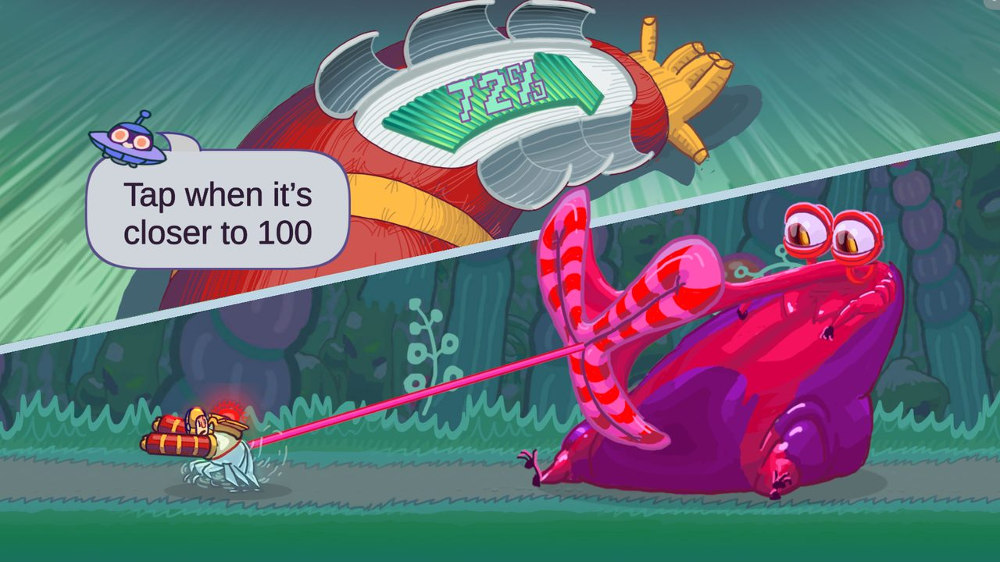
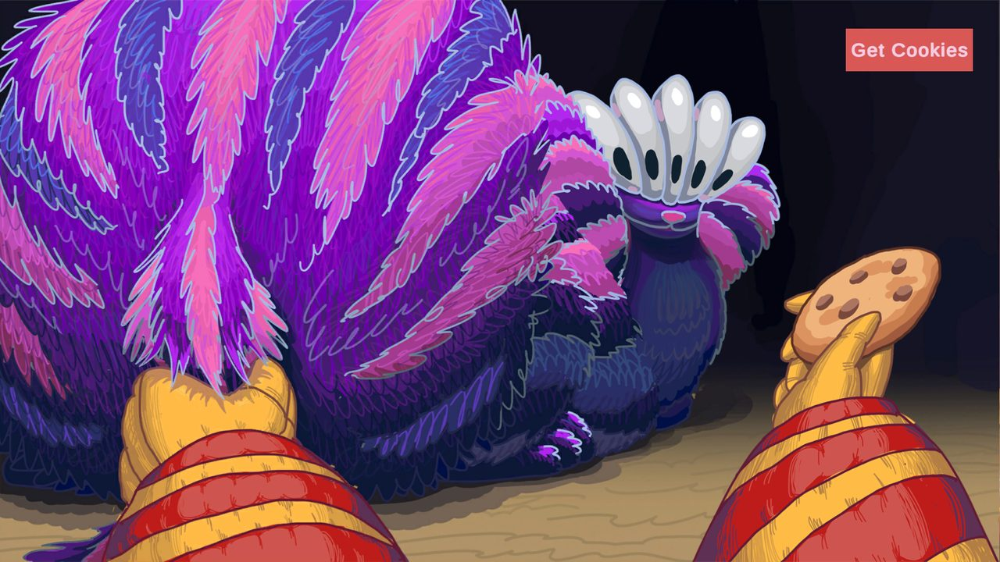
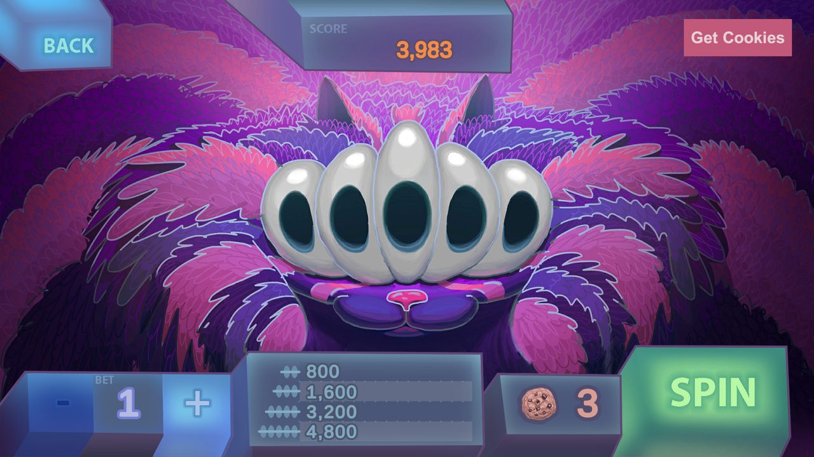
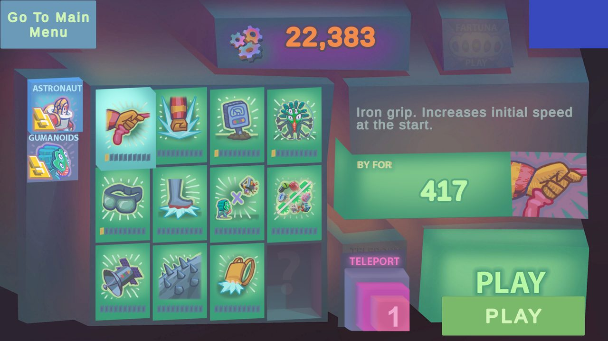
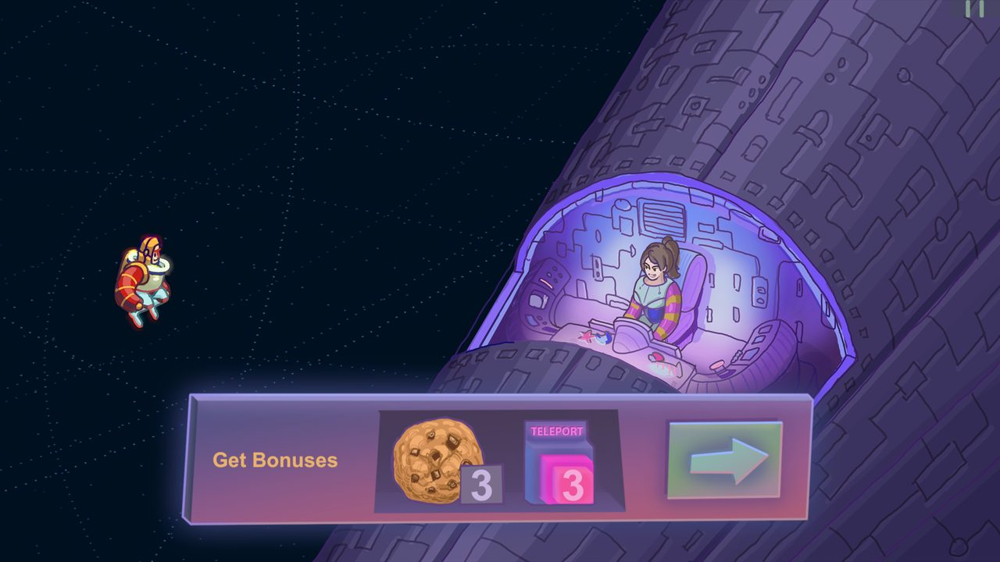

Game development · Mobile game
Amba
My own side-scrolling runner for mobile: an astronaut chases the aliens who stole parts of his ship, while Amba, a huge hungry creature, tries to catch him with its tongue. Every character and every move is animated by hand, frame by frame.
The opening cutscene of the game. Drawing, animation and editing are all mine.
01 · Overview
A runner that feels like surfing
Each run gives the player a limited number of “hits” to push off the ground and fly further. The goal is to land precisely on the aliens running along the path: every hit on an alien gives extra hits and keeps you ahead of Amba. Between runs the player spends what they collected on upgrades, so the game also has roguelite progression.
The art direction is the acidic, cartoonish look of 90s TV animation such as “Earthworm Jim” and “The Ren & Stimpy Show”. The hand-drawn animation is tied to the character’s movement, so the controls feel smooth, like surfing through enemies and obstacles.
02 · Animation
From sketch to final frames
I animate every move by hand in Photoshop, frame by frame. The timelapse plays one animation of the bird in every saved version of the file, in the order I made them: you can see the rough pass, the cleanup, the colour and the timing change from version to version.
16 versions of the bird animation, from July to August 2012. Each version plays its own frame-by-frame animation, exactly as it was saved in the Photoshop file.
03 · What I did
My contribution
Amba is my own project, and I made the game myself, from the first sketches to the build. A sound designer worked with me on the sound.
- Came up with the game, its world and its characters.
- Drew and animated all characters frame by frame: the astronaut, Amba, the aliens and the bosses.
- Painted the backgrounds of several biomes, the interface and the visual effects.
- Storyboarded, animated and edited the cutscenes.
- Learned Unity and C# to build the game myself: movement, the hit system, the shop, the slot machine and the mini-games.
04 · Gameplay
In the game
Gameplay recording: the run, the bonus round, the slot machine and the shop.





05 · Items
Equipment in action
During a run the astronaut picks up equipment that changes how he moves. Each item has its own hand-drawn animation that plays in sync with the movement.